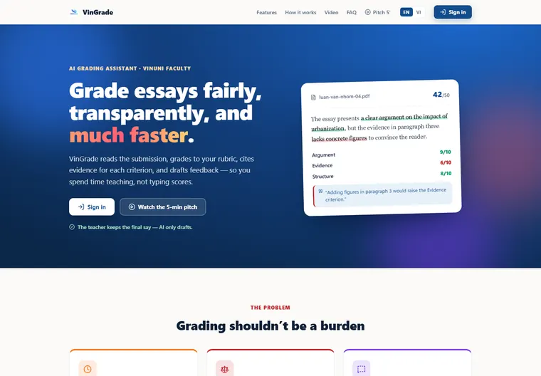
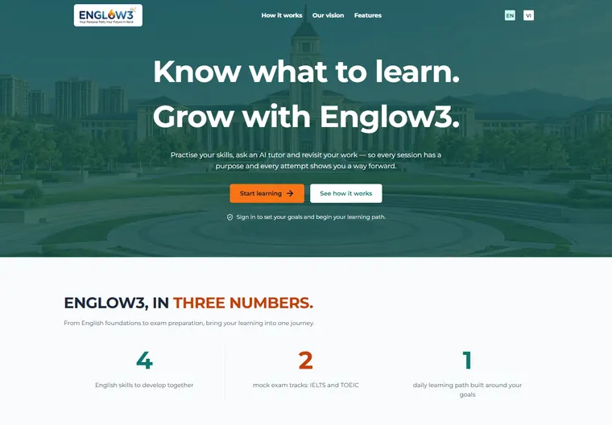
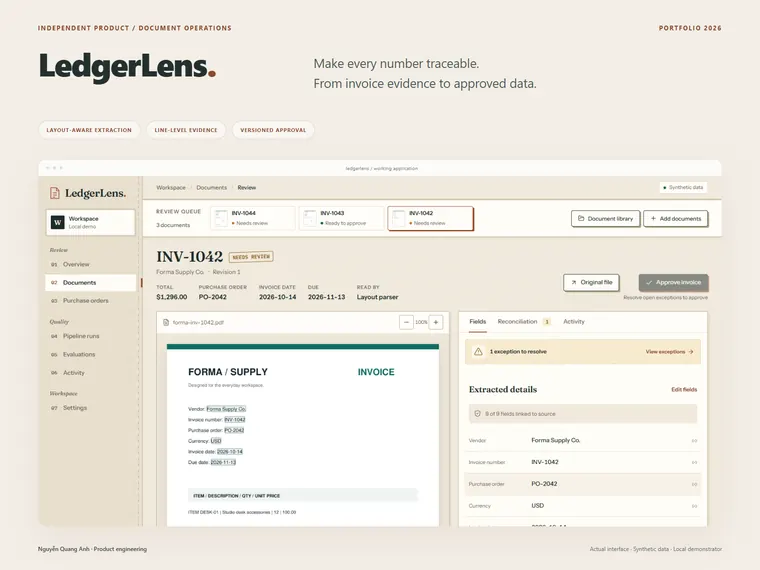
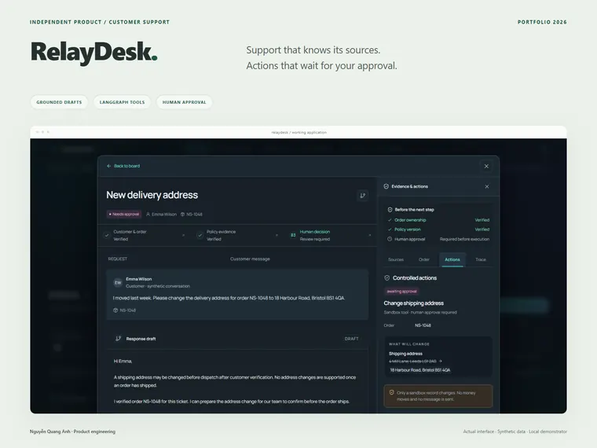
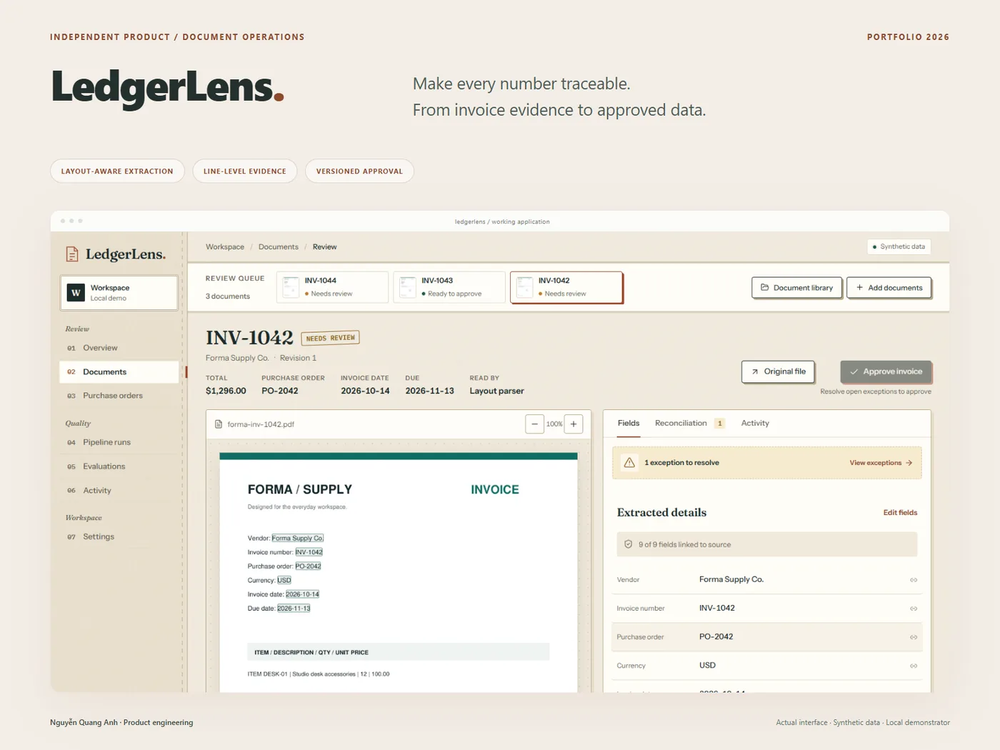
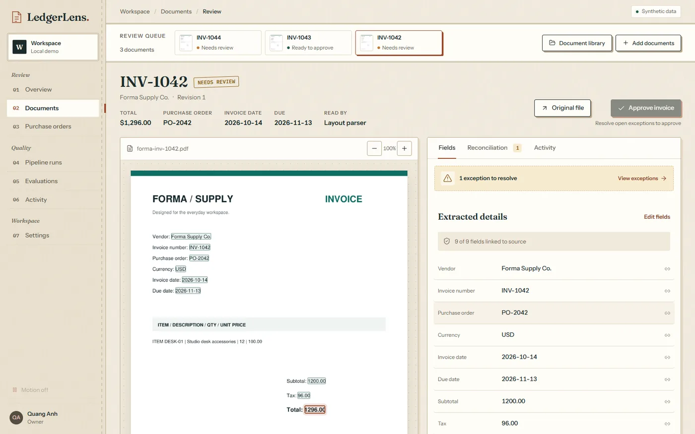
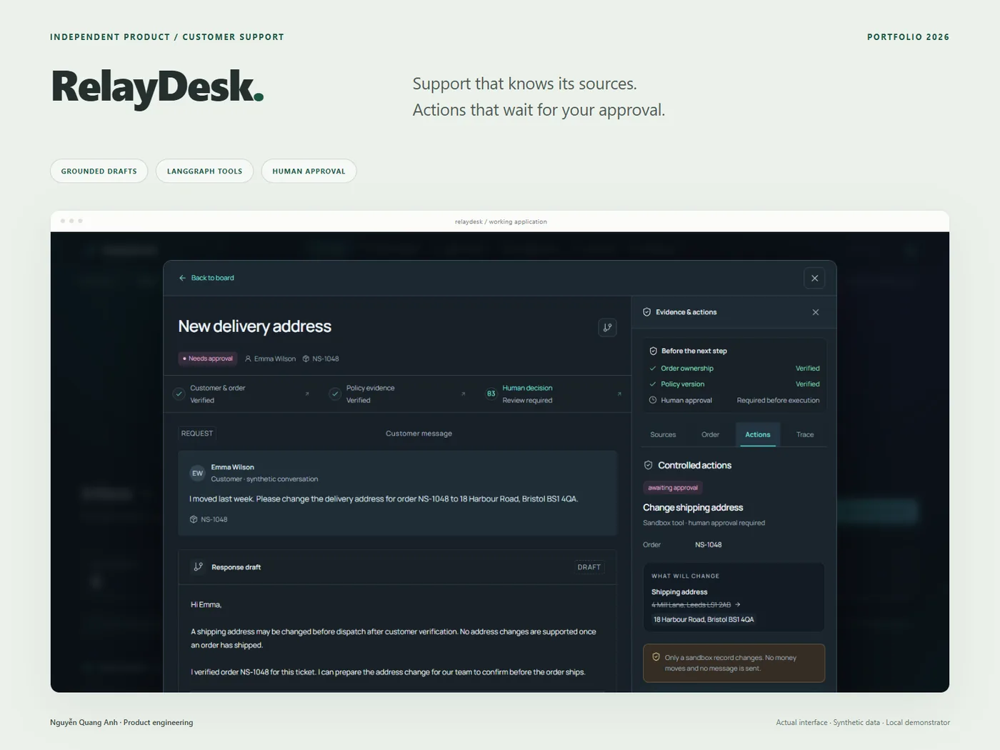
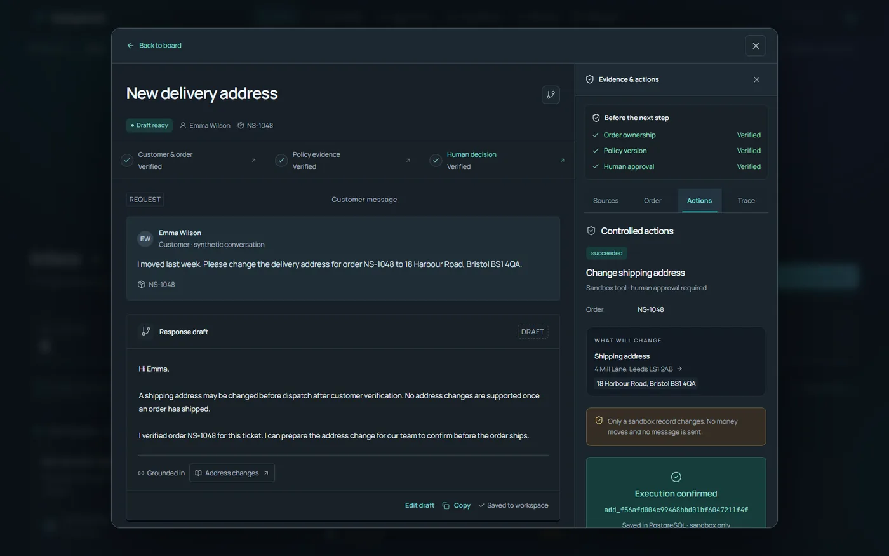

VinGrade
An AI essay grading assistant that keeps teachers in control.
- Python
- FastAPI
- pgvector
- React
quang-anh · portfolio
Practical AI, with a human in the loop.
AI engineer based in Hanoi. I build retrieval pipelines, agent workflows and the backend systems that make them usable — and I measure them honestly.
Sep 2026 — Present
Run hands-on labs on deploying and operating AI systems.
Experience
May — Aug 2026
Completed the Applied AI Talent Program and built VinGrade.
Training
Jan — Apr 2026
Retrieval and evaluation for an internal document-QA RAG system.
Experience
2022 — Dec 2026
Engineer’s degree, expected December 2026.
Education
Stay curious, build practically, and keep people in control.
LLM applications, retrieval and agent workflows, measured with evaluation sets.
Tech stack
Used in
APIs and services that make AI features dependable: validation, jobs and permissions.
Tech stack
Used in
Relational data, vector search and caching behind the applications.
Tech stack
Used in
Interfaces for reviewing, approving and using what the models produce.
Tech stack
Used in
Containers, CI and automated tests that keep releases repeatable.
Tech stack
Used in
AI products, retrieval systems and full-stack applications — each with a case study.

An AI essay grading assistant that keeps teachers in control.

IELTS and TOEIC preparation, connected across web and mobile.

A document review workspace for layout-aware invoice extraction and purchase-order matching.

A support operations desk with policy retrieval, agent tools and human approval.
Ready to collaborate or just want to chat? Let's build something useful together.
quanganhptit030@gmail.comTake a break and enjoy a small game built with vanilla JavaScript.
← → Move
↓ Soft drop
↑ / Space Rotate
AI · EDUCATIONPrivate repository · 2026
Grading, with evidence.
Essay scores need a reason. VinGrade connects rubric-based assessment to evidence in the essay, with a review flow for teachers.
The problem
Make AI-assisted assessment inspectable: a teacher should be able to understand the evidence behind a score and review the result.
The workflow
Evaluate the essay against assignment-specific rubric criteria.
Attach quoted essay evidence to the assessment.
Let a teacher inspect and review the grading output.
My contribution
Engineering decisions
Scores are accompanied by essay evidence so the teacher can inspect the reasoning.
AI assists the assessment; teachers remain responsible for reviewing the result.
FULL-STACK · EDUCATIONPrivate repository · 2026 — ONGOING
A clearer path to English.
A graduation-thesis project bringing placement, exam practice and learning flows into one English test-preparation platform.

The problem
Keep placement and exam data consistent while supporting different learning experiences on the web and on mobile.
The workflow
Use a placement flow to establish a starting point.
Deliver exam and learning content through shared backend models.
Serve web and mobile clients through the platform API.
My contribution
Engineering decisions
Web and mobile consume a consistent representation of exam content.
Schema migrations and modular backend components support ongoing feature work.
DOCUMENT AUTOMATIONIndependent demo · 2026
From invoice to audit trail.
An independent portfolio demo that makes invoice automation reviewable—from document intake to field evidence, purchase-order checks and approved exports.

The problem
An extracted value is not enough. Reviewers need its source, a way to correct it, and a reliable record of what was approved.
The workflow
Read PDF or image invoices by layout and keep where each value sits on the page.
Inspect field evidence and purchase-order discrepancies.
Create a versioned approval snapshot and export CSV or JSON.
My contribution

Engineering decisions
The source document and review controls share a workspace.
Exports correspond to the approved version, rather than an untracked mutable view.
AGENT WORKFLOWSIndependent demo · 2026
Automation, with a handoff.
An independent portfolio demo exploring how an agent can prepare support decisions while a person retains control over sensitive actions.

The problem
Turn a support request into a traceable decision without letting an automated recommendation silently become a real-world action.
The workflow
Check order ownership, find versioned policy passages and run read tools.
Prepare a grounded reply and pause before any change for human approval.
Execute the approved sandbox action, record its receipt and resolution history.
My contribution

Engineering decisions
The agent pauses before the reviewer approves an action.
The case retains the policy context used to prepare the decision.